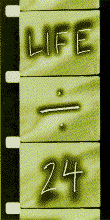
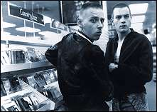
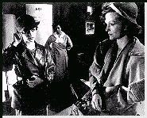

Contents | Features | Reviews | News | Archives | Store

Contents | Features | Reviews | News | Archives | Store
|  | 22nd Seattle
International |
The final week of SIFF was marked by madness on all levels. At the same time that several major films - Lone Star, L'America and The Umbrellas of Cherbourg - were making their bows to enthusiastic and overflow audiences, the technical gremlins that had been popping their heads up periodically throughout the festival chose to come alive in full-blown malevolence.
With temperatures of all sorts already on high at the Egyptian (what air conditioning?), the Dolby sound system suffered a severe, if temporary, lapse during the fourth screening, necessitating a half-hour delay and the use of only one projector to limp through the remainder of the film. Consequently, after those of us lined up for Trainspotting had fought our way to our seats, we were treated to an unexpected double bill, with the addition of the Dolby System Test Film to the evening's fare. A remarkable cinematic document, replete with several high-frequency sound tests designed to set your teeth on edge, unique graphics and its use of all manner of fascinating terminology (define 'azimuth'), the film had three run-throughs, to increasing applause and audience participation. One individual was sufficiently moved by the spectacle to wave his Bic lighter back and forth in time to some of the sound effects. Maybe it was the specter of too many films in too many weeks, but I was on the verge of believing that it was the best thing I'd seen that week. Reality returned when an embarrassed Darryl sternly informed us that we could not give the Golden Space Needle Award to the test film, regardless of how we felt about it. It was a measure of how far gone many of us were when our response was to boo and hiss at him. Hopefully, all of this sibilant banter was in good fun, but, because of the forty-five-minute delay in starting Trainspotting, Darryl was probably fortunate that no one had any leftover fruit in his or her backpack...
But, in terms of filmmaking power, not even the gremlins could thwart the effect that Trainspotting had on its initial Seattle audience. If the reception accorded the film at this year's SIFF was any indication of future success stateside, then it is in for a very good time, both critically and commercially. On closing night, just before the U.S. première of Robert Altman's latest, Kansas City, it was announced that Trainspotting had won the Golden Space Needle Award for Best Picture, and Boyle had won in the Best Director category, a phenomenal success given the fact that the first screening of Trainspotting concluded only half an hour before balloting for the awards closed. Perhaps the first clue to the film's eventual success should have been evinced by ticket sales alone; both screenings were completely sold out two weeks in advance.
Other Golden Space Needle winners included Lili Taylor for Best Actress (for her performances in I Shot Andy Warhol, Girlstown and Cold Fever - she also, if I'm not mistaken, contributed a beautifully-measured cameo to Tim Metcalfe's Killer: Journal of a Murder); Hype! was the winner in the Best Documentary category; and Vincent D'Onofrio won the Best Actor award for his work in the opening-night film, The Whole Wide World. That film also picked up an Independent Film award for its director, Dan Ireland.
Sound glitches also plagued Altman's new film, Kansas City, but, unfortunately, the technical difficulties were only the least of its problems. Altman is one of those problematic directors, whose work suffers from what might politely be referred to as inconsistency in execution. When Altman's work is brilliant and insightful, it is all that and more, but experience states that, for every M*A*S*H or Nashville, there is always a Health waiting just over the horizon to trap the unwary filmgoer.
Unfortunately, Kansas City falls into that other, more regrettable category: 'Films by Altman To Be Avoided At All Costs'. KC was one of the most anemic offerings in the festival, despite the presence of modern jazz greats, such as Joshua Redmond, standing in for their illustrious predecessors. Everything was wrong with it, from pacing that borrowed its inspiration from overcooked spaghetti, to an uninspired script, to thoroughly unlikable leads; the lack of chemistry between Miranda Richardson and Jennifer Jason Leigh permeated every scene they were in together, and those constituted the majority of the film; consequently, the film's impending and ungraceful demise was obvious forty minutes into the proceedings.
You know a film is bad when the only sign of life from the audience - and the film - come after a scene in which these accomplished jazz musicians give an electrifying performance and the audience breaks out into spontaneous applause which contains more than a hint of desperation. Many people (myself included) found that a periodic trip to the lobby, or two, or three, made the film bearable - just. Word had it that Alex Cox's Lust and Revenge had much the same effect on people.
There were brighter notes. Todd Solondz's second feature, Welcome to the Dollhouse, lived up to its billing as a Sundance prize winner. A brutally lacerating dark comedy about the stint in hell known as seventh grade, it follows the torments of one Dawn Wiener (in an on-target performance by Heather Matarazzo), who, as the middle child in her family, and an ugly duckling at school, has no respite from suffering in either place. Eventually, Dawn must choose between her desire to be liked and the need to develop and assert her own identity.
To describe the film any further would be to reveal too many of the nuances that provide it with such a rich set of psychological underpinnings, but anyone who does not feel a sickening jolt of recognition during the opening sequence, when Dawn has to find a seat in the crowded cafeteria with her lunch tray grasped firmly in her sweaty hands, either spent his or her adolescence in a cave or was one of those delightful shake-down artists who should have. I would give Welcome to the Dollhouse unqualified applause, except for a few qualms, as yet unresolved, about the extent to which the film may be trying too hard to ingratiate itself into the sensibilities of former social lepers, and whether said ingratiating tone is synonymous with a filmmaker's condescension. In other words, is the joke really on the audience?
In terms of a 'Best/Worst' division of films, the breakdown is as follows:
And let's not forget those Guilty Pleasures: Who Killed Teddy Bear?; Scorpion Spring; Back to Back; Shadow of the Pepper Tree.
Contents | Features | Reviews | News | Archives | Store
Copyright © 1999 by Nitrate Productions, Inc. All Rights Reserved.